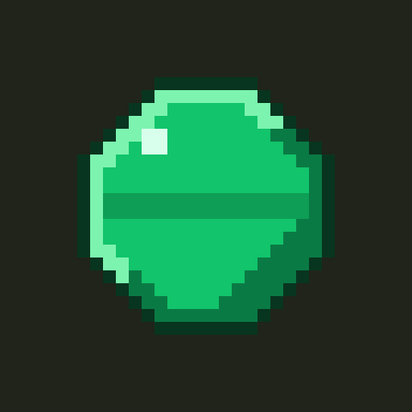
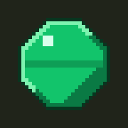
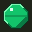
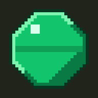

1App icon — the emerald on ink
The emerald is the mark — it is the app's own material, already drawn at the right discipline, and it holds the two-apps rule: gold coin is the routine app, emerald is math. The one real decision was the ground, and it is ink #20241a rather than parchment. Parchment is the app's ground inside, where it is the paper everything sits on; as a 48px tile among full-colour icons it becomes a pale square that recedes, and a green gem on cream is a notes app. Ink is already in the system — --bg-dark, the round-bar track and the timer strip — and it makes the emerald the brightest thing in its own tile. See the comparison in 1b.
1aThe set
icon-512 · any

maskable-512
apple-touch 180
favicon 32
One 32×32 master, upscaled nearest-neighbour only. 512 is ×16, 192 is ×6, favicon is ×1 — so every delivered size is the same pixels, larger. The 32 downscales cleanly, so no 16 variant is needed.
180 is not a multiple of 32, so it is composed rather than scaled: the master at ×5 is 160px, centred on a 180px ink ground with 10px of bleed. Nothing is smeared to fit.
Maskable is the same gem at 20/32 rather than 26/32. Its widest span is 1.05 × its width — 21px on the 32 grid — which sits inside the 25.6px safe circle with room. The ground bleeds to all four edges in every variant, so iOS never fills transparency with black and Android's mask never bites into the mark.
180 is not a multiple of 32, so it is composed rather than scaled: the master at ×5 is 160px, centred on a 180px ink ground with 10px of bleed. Nothing is smeared to fit.
Maskable is the same gem at 20/32 rather than 26/32. Its widest span is 1.05 × its width — 21px on the 32 grid — which sits inside the 25.6px safe circle with room. The ground bleeds to all four edges in every variant, so iOS never fills transparency with black and Android's mask never bites into the mark.
1b48px on a busy home screen · and the ground that lost
Photos
Weather

Times TableNotes
Files
Music
Camera

Health
Cards
Row one, third tile, is the icon at its real home-screen size. Row two, third tile, is the parchment version that lost — at 48px it dissolves into the pale neighbours and the gem loses its outline against cream. Note also the Health tile: a saturated green is a common neighbour, which is why the gem needs a dark surround rather than a green-on-light one to stay distinct.
1cUnder the OS masks
circle · 100%
squircle
The dashed ring is the 80% circle. The gem clears it on every side, and because the ground bleeds to the edges there is no mask shape that can expose a corner. No radius is drawn into the artwork — the OS owns the corner, and a baked-in one would show as a double edge under a circle mask.
1dThe two manifest rulings
background_color → #f3eee1
parchment, replacing the stale #fbfaff
This is the splash ground while the installed app boots, and the first painted screen is parchment. Any other value is a flash of the wrong colour on every cold start. The dark icon sits on the light splash deliberately — that contrast is the same one the home screen has, so launching feels like the tile growing rather than a scene change.
theme_color → #f3eee1
one value, matching index.html
The manifest's #6b4de6 predates the design system and contradicts the meta tag already in the head. Parchment wins because it is what the screen under the chrome actually is — the status bar should disappear into Home, not sit on it as a band. It also keeps the promise the whole system makes: the app has no purple in it anywhere.
One consequence for the build: a light theme colour means the status bar needs dark content. Android infers it; iOS wants apple-mobile-web-app-status-bar-style: default.
One consequence for the build: a light theme colour means the status bar needs dark content. Android infers it; iOS wants apple-mobile-web-app-status-bar-style: default.
The icon never themes. My Look repaints five decorative surfaces inside the app; the icon is not one of them. It is the app's face on a home screen shared with other apps, and a face that changes when she picks Nether is a different app twice a month.